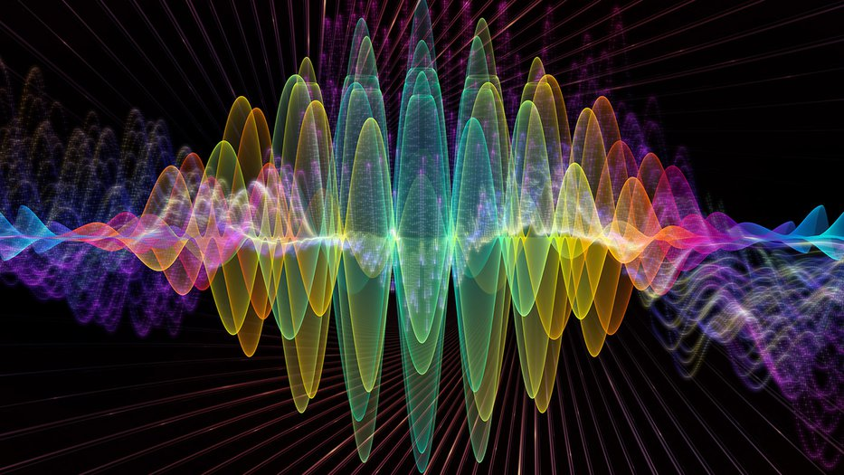

2. Wave-Particle Duality
2. Wave-Particle Duality¶

The first thing that we looked at in the video, was wave-particle duality.
Wave-particle duality is the ability of small-scaled objects to show both wave-like behaviour and particle behaviour.
Waves are pertubations in some medium that causes the transfer of energy without the transfer of matter. Waves are associated with phenomena like Superposition, Interference and Diffraction. And these are phenomena that we have evidence of in everyday life.
On the other hand, particles are localized “stuff”, having specific amounts of matter and specific properties like its charge, speed and form.
In the Pre-Quantum Mechanics era, experiments like Young’s Double Slit in 1801 gave us proof that light was a wave by demonstrating light interference, whereas JJ Thomson’s cathode ray experiments showed us that electrons were negatively-charged particles.
However, it took some 100 years or so for us to piece together that light, which we had evidence for being a wave, could have “amounts” and that changed things.
Tip
You can look up the ultraviolet catastrophe in the black-body radiation problem, as well as the photoelectric effect experiment to get a deeper understanding on the particle-like behaviour of light.
These amounts were given the name quanta from the latin meaning “how much”. Of course, it wasn’t readily accepted by Physics community at the time, but the evidence was there… That’s how the word “quantum” came to life, in Physics.
It took 20 or so more years, before the idea that particles could also behave in a wave-like manner came to be, when it was electron interference was experimentally proven. And this is what wave-particle duality is.
Tip
For a greater understanding of the wave-like behaviour of matter, look up De Broglie’s proposition of wave-particle duality and the Davisson and Germer’s electron diffraction experiment.